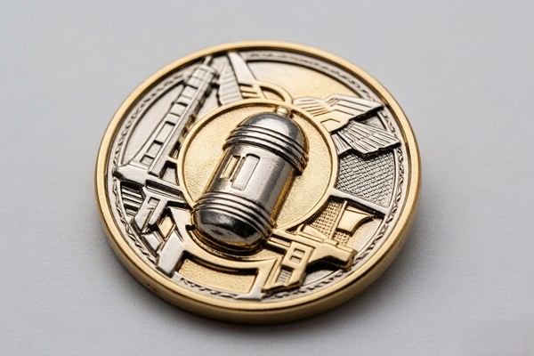
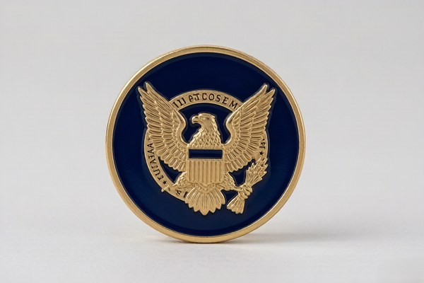

What Is a 2D Challenge Coin?
A 2D challenge coin keeps the design flat against the surface of the metal, with color and detail defined by enamel fill and engraving. There is no raised relief — the emblem, text, and borders all sit at the same level, separated by thin metal lines that keep each color distinct.
This is the classic challenge coin look, and it is what most people picture when they think of a coin. The flat surface makes 2D coins ideal for designs with lots of color, fine text, and intricate line work, because everything can be reproduced crisply without the interference of raised depth. Most traditional soft enamel and hard enamel coins are 2D.
2D coins are also the more affordable option. Because there is no sculpting step, the tooling is simpler and production is faster, which keeps per-piece pricing lower — a meaningful advantage on large orders.
What Is a 3D Challenge Coin?
A 3D challenge coin sculpts the design in raised, multi-level relief, so the artwork physically rises off the surface of the coin. An eagle, a shield, or a mascot gets real depth — different parts of the design sit at different heights, creating highlights and shadows that a flat coin simply cannot produce.
The effect is dramatic. A 3D coin looks and feels more like a small sculpture than a printed disc, and the depth gives the design a presence that reads clearly even from across a room. This is why 3D coins are a favorite for bold subjects — emblems, crests, mascots, and faces — where dimension and realism matter more than flat color.
3D relief can be sculpted on one side or both, and it pairs beautifully with antique finishes, which settle into the recesses and emphasize every raised contour. It is the premium option in the challenge coin world.
How 3D Coins Are Made
The key difference in production is that a 3D coin starts with a sculpted model rather than a flat drawing. The design is modeled in three dimensions — often digitally — and that model is used to cut a die with multiple levels of depth. When metal is struck or cast into that die, the design emerges with real relief.
This sculpting step is what makes 3D coins more expensive and slightly slower to produce than 2D coins. It also means the design needs to be suited to relief — bold, simplified shapes work best, because extremely fine detail can get lost in the depth. The extra cost is usually justified for designs that benefit from dimension, but it is worth knowing why the price differs.
Visual Impact: 2D vs 3D
Side by side, a 2D coin reads as clean, flat, and graphic, while a 3D coin reads as sculptural and dimensional. The 2D coin relies on color and line to carry the design; the 3D coin relies on depth and shadow. Neither is superior — they are simply different tools for different jobs.
A useful way to think about it is in terms of lighting. A 2D coin looks the same from every angle, because there is no relief to catch the light. A 3D coin changes as you tilt it, with highlights shifting across the raised surfaces. That dynamism is part of the appeal — a 3D coin feels alive in a way a flat coin does not.
If you are trying to decide between the two, ask yourself what you want the viewer to feel. A 2D coin communicates information clearly; a 3D coin creates an impression. Both are valuable, depending on the goal.
Color, Enamel, and Finishes
Both 2D and 3D coins can use enamel color, but they use it differently. In a 2D coin, enamel fills the recessed areas to create the colored design. In a 3D coin, the relief is often left in bare metal — typically with an antique or polished finish — so the depth itself carries the design, with enamel used sparingly as an accent.
This is a key stylistic difference. A full-color 3D coin is possible, but too much color can flatten the visual effect of the relief. The most striking 3D coins often use a single metal finish and let the sculpted shadows do the work, while 2D coins embrace full color as their primary language.
If your design is color-driven — a detailed full-color logo, for example — 2D is usually the stronger choice. If your design is form-driven — a bold emblem or mascot — 3D relief lets that form take center stage.
Cost and Production Time
3D coins cost more than 2D coins because of the sculpting and multi-level tooling involved. The difference is most noticeable on smaller orders, where the setup cost is spread across fewer pieces, and it narrows on large orders. 3D coins also typically take a few extra days to produce.
For budget-sensitive projects, a 2D soft enamel coin is the most cost-effective route to full color. For a premium piece where the budget allows, the extra cost of 3D relief usually pays for itself in perceived value — a 3D coin simply feels more substantial and special.
Design Tips for 3D Relief

If you are going with 3D, a few design principles will help the relief read at its best. First, simplify the subject. Sculpted relief works with bold, recognizable shapes — a swooping eagle, a clear crest, a strong mascot — because the eye needs to parse the form quickly. Intricate, busy subjects tend to blur when sculpted, so cut anything that does not define the shape.
Second, design for depth. Think of the design in layers: a background plane, a mid-level, and a top level that rises highest. The contrast between these levels is what creates the dramatic shadows that make 3D coins so striking. If everything sits at the same height, the effect flattens out and you lose the benefit of the relief.
Third, consider the angle of view. A 3D coin is rarely seen perfectly flat — it gets tilted, handled, and displayed at angles. Sculpt the most important element at the highest level so it stays prominent from every angle, and keep fine detail on the lower levels where it will not cast confusing shadows.
Choosing Metals and Finishes for Your Coin
The metal and finish you choose can amplify or mute the effect of both 2D and 3D designs. For 3D relief, antique finishes are the classic choice, because the darker tones settle into the recesses and make every raised contour pop. Polished finishes, by contrast, reflect light evenly and can wash out the shadows that define the relief.
For 2D coins, the finish choice is more about mood than depth. Bright gold or silver plating reads clean and modern, while antique finishes give the coin a traditional, aged character. Black nickel creates a dramatic, tactical look that works with either style. The material also matters: zinc alloy keeps coins light and affordable, while brass adds weight and a more premium feel.
A good rule of thumb is to let the finish support the style. Antique finishes and 3D relief are natural partners, while bright platings and flat 2D designs tend to complement each other. There are no hard rules, but keeping the finish and the style in harmony makes the whole coin feel intentional.
The History and Evolution of 3D Coins
The challenge coin has always been a three-dimensional object, but the sculpted 3D relief style as we know it is a more recent evolution. Traditional challenge coins were largely flat, relying on enamel color and engraved detail. As die-making and digital modeling technology improved, manufacturers began sculpting designs in true multi-level relief, opening up a whole new visual language.
Today, 3D relief is one of the most requested styles for military insignia and commemorative pieces, precisely because it gives emblems the gravitas and realism that flat color cannot. The technology behind it — digital sculpting and precision die-cutting — means even complex subjects can be modeled faithfully, and the style continues to grow in popularity.
Common Mistakes When Choosing 2D or 3D
A few mistakes come up repeatedly when people choose between 2D and 3D, and they are easy to avoid once you know them:
- Choosing 3D for a text-heavy design and losing legibility in the relief.
- Choosing 2D for a bold emblem that would have benefited from sculpted depth.
- Over-coloring a 3D coin, which flattens the very relief you paid for.
- Expecting photographic detail from enamel when UV printing is the right tool.
- Not comparing both styles on a proof before committing to production.
2D vs 3D: A Quick Comparison
| Feature | 2D Coin | 3D Coin |
|---|---|---|
| Surface | Flat | Raised, multi-level relief |
| Detail | Crisp color and fine text | Sculpted depth and shadow |
| Cost | More affordable | Higher |
| Best for | Full-color logos, text | Emblems, crests, mascots |
| Finish | Bright or antique plating | Often antique to emphasize relief |
When 2D Works Best
Choose 2D when your design is about color, detail, or text. A full-color logo with fine lines, a design with several enamel colors, or a coin with a meaningful motto all benefit from the clean, flat surface of a 2D coin. 2D is also the right call for large orders where per-piece cost matters most.
- Full-color logos and detailed illustrations
- Designs with fine text or intricate line work
- Large-quantity orders on a budget
- A classic, traditional challenge coin look
When 3D Stands Out
Choose 3D when your design is about form — a bold emblem, a mascot, a crest, or a face. Sculpted relief gives these subjects a presence and realism that flat color cannot match, and it makes the coin feel like a collectible rather than a printed piece.
- Bold emblems, crests, and mascots
- Military and unit insignia with sculpted detail
- Commemorative and collectible pieces
- Designs where depth and shadow matter more than color
Combining 2D and 3D

You do not have to choose strictly between the two. Many of the best coins combine 3D relief on the emblem with 2D enamel color around it — the dimension of 3D with the richness of full color. A sculpted eagle rising from a field of colored enamel, for example, gives you the best of both worlds.
This hybrid approach is more involved to design and costs more than either style alone, but for a flagship coin or a special commemorative, it produces a result that genuinely stands out. If you are considering it, ask your designer to model both options so you can compare before committing.
How to Decide: A Simple Framework
If you are still torn between 2D and 3D, a simple three-step framework usually settles it. First, ask what the design is communicating: is the message carried by color and detail, or by form and presence? A full-color logo points toward 2D; a bold emblem points toward 3D. Second, ask how the coin will be used: a coin meant to be carried and traded suits the durability and lower cost of 2D, while a coin meant to be displayed suits the impact of 3D.
Third, ask what the budget allows. If the budget is tight or the order is large, 2D soft enamel is the most cost-effective route to a great result. If the budget has room and the coin is a special piece, the extra cost of 3D relief usually pays for itself in perceived value. Answer these three questions, and the right choice is usually obvious.
And remember the hybrid option: you can often combine 3D relief on the emblem with 2D enamel color around it, which sidesteps the choice entirely and gives you the best of both. Ask your designer to model both a full-2D and a hybrid version so you can compare them side by side.
The Perceived Value of 3D Coins
One of the reasons 3D coins command a higher price is that they are perceived as more valuable, and perception matters when a coin is meant to impress. A sculpted coin feels heavier in the hand, looks more intricate on a shelf, and reads immediately as something special. For awards, honors, and executive gifts, that perceived value is often the entire point.
This is why so many organizations reserve 3D for their most important coins and use 2D for everyday pieces. The 2D coin does the practical work — affordable, durable, produced in quantity — while the 3D coin delivers the emotional impact at the moments that call for it. The two styles serve different roles in a recognition program, and using both is a sign of a well-thought-out approach.
If your budget allows only one style and the coin's job is to impress, lean toward 3D. If the coin's job is to be carried, traded, and produced in volume, 2D is the workhorse. Neither is a compromise — they are simply different tools for different moments.
When a Hybrid Design Makes Sense
The hybrid approach — 3D relief on the emblem combined with 2D enamel color — is worth a closer look for certain designs. It makes the most sense when you have a bold central subject that benefits from depth, surrounded by a colored field that adds richness. A sculpted eagle on a field of blue enamel, for example, gives you the drama of relief and the color of enamel in one coin.
Hybrid coins are more involved to design and cost more than either style alone, so they are best reserved for flagship pieces — a unit's master coin, a major anniversary, or a high-profile award. For those special moments, the combination of depth and color produces a coin that genuinely stands apart from anything flat or single-tone.
Real-World Examples of 2D and 3D Coins
Concrete examples make the distinction easier to picture. A classic 2D coin is the traditional unit coin: a full-color insignia with a motto around the border, crisp and readable, produced in quantity for a team or unit. It is affordable, durable, and instantly recognizable — the workhorse of the challenge coin world.
A classic 3D coin is the sculpted military or commemorative piece: an eagle or a crest raised in multi-level relief, often with an antique finish that emphasizes every contour. These coins are treated as keepsakes and collectibles rather than everyday carry pieces, and they command attention the moment they are picked up.
Many organizations use both: a 2D coin for the bulk of the group and a special 3D version for awards and milestone recognitions. It is a smart way to get the cost advantage of 2D for volume while reserving the premium impact of 3D for the moments that deserve it.
Working With a Designer on 3D Relief
3D relief benefits enormously from good collaboration with a designer, because the design has to be translated from a flat image into a sculpted model. Share reference images of coins you like, describe which elements should rise highest, and be open to the designer's suggestions about what will and will not work in relief. A good designer will tell you when a detail is too fine to survive the sculpting process.
The proof stage is where this collaboration pays off. A free digital proof shows the relief from multiple angles, so you can see exactly how the depth will look before production. Request changes freely — revisions are unlimited until you approve — and trust the process. The result is a coin whose relief was designed intentionally, not an afterthought.
The Future of 2D and 3D Coin Design
Challenge coin design continues to evolve, and both 2D and 3D styles are being pushed in new directions. Digital modeling has made 3D relief more detailed and affordable than ever, opening it up to designs that would have been impractical a decade ago. At the same time, advances in UV printing have expanded what 2D coins can do, allowing photographic detail and full-spectrum gradients that enamel cannot match.
The most exciting development is the blurring of the line between the two, as hybrid coins combine sculpted relief with full-color printing to create pieces that are part sculpture, part image. Whatever direction your design takes, the fundamentals hold: choose the style that serves the message, keep the design focused, and review the proof carefully. The tools have changed, but the goal is the same — a coin people are proud to carry and keep.
Frequently Asked Questions
What is the difference between 2D and 3D coins?
A 2D coin keeps the design flat, with color and detail defined by enamel and engraving. A 3D coin sculpts the design in raised, multi-level relief so the artwork physically rises off the surface.
Can 3D coins have color?
Yes, though 3D coins often use metal finishes and let the relief carry the design. Color can be added as an accent, but too much color can flatten the visual effect.
Are 3D coins more expensive?
Yes. The sculpting and multi-level tooling add cost and a few days of production time, though the difference narrows on large orders.
Can I combine 2D and 3D on one coin?
Absolutely. Many coins combine 3D relief on the emblem with 2D enamel color around it for the best of both worlds.
Conclusion
The choice between 2D and 3D comes down to what your design needs to communicate. If the message is carried by color and detail, go 2D. If it is carried by form and presence, go 3D. And if you cannot decide, a hybrid coin that combines sculpted relief with enamel color gives you both.
Ready to see your design in both styles? Get a free quote and digital proof, and we will model your coin in 2D and 3D so you can choose with confidence.
Whether you land on flat 2D color or sculpted 3D relief, the goal is the same: a coin that feels like it was made for the moment it marks. Choose the style that serves the message, keep the design focused, and the result will carry itself.
Either way, the choice is yours — and it is one you can make with confidence once you have seen your own design in both styles.